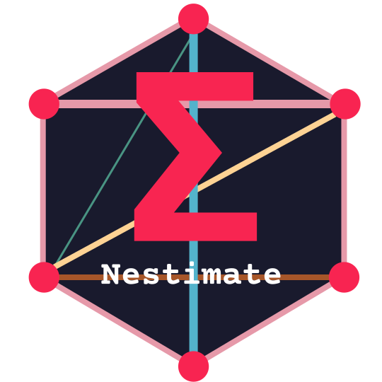
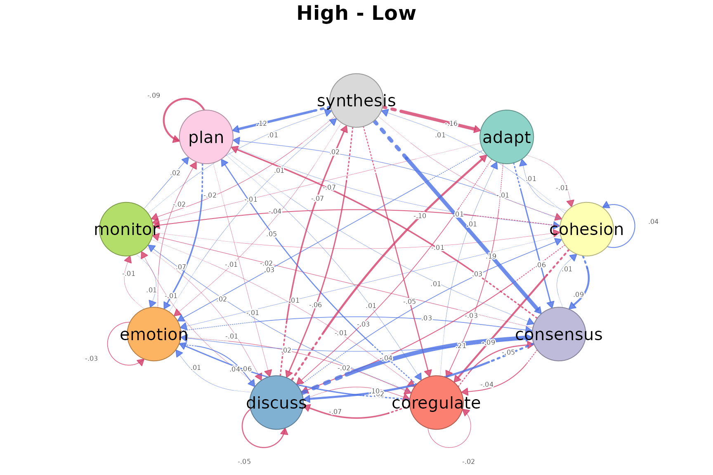
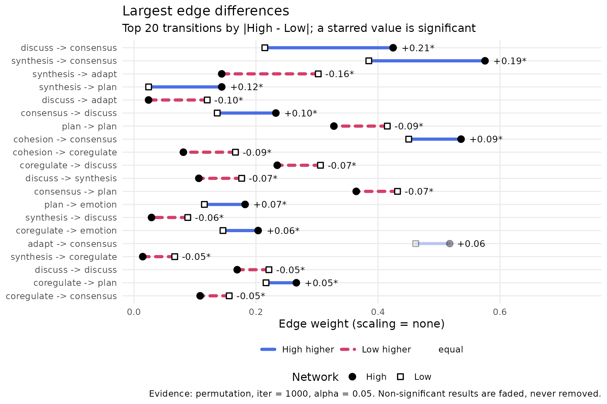
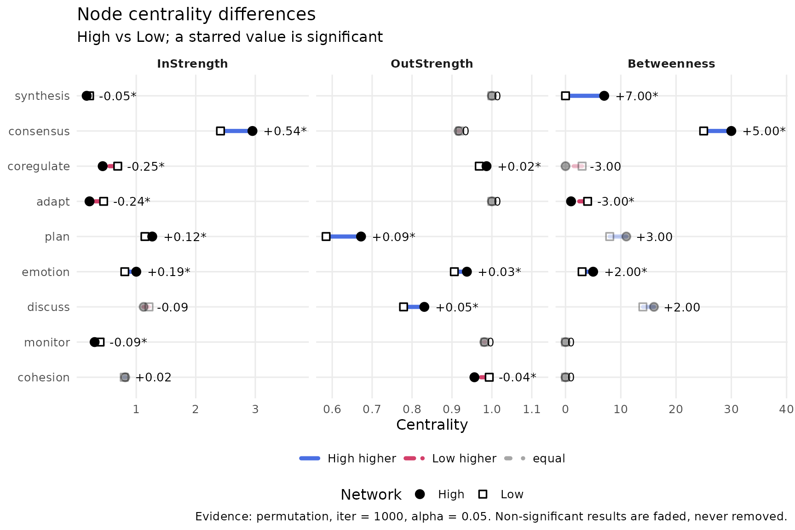
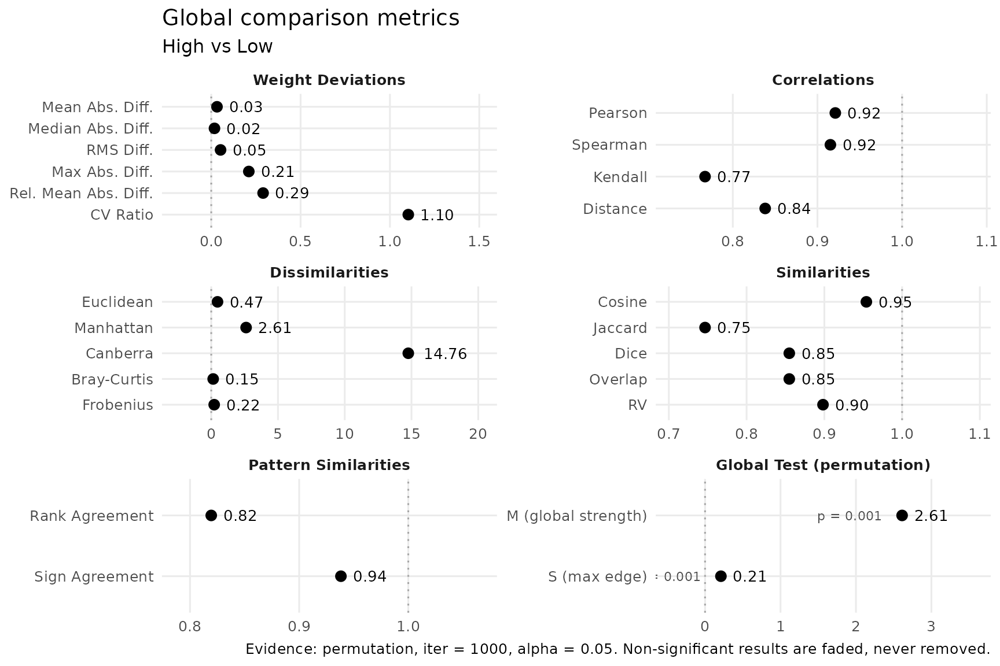
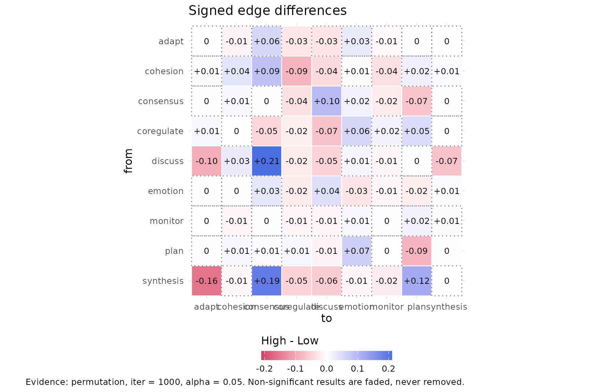
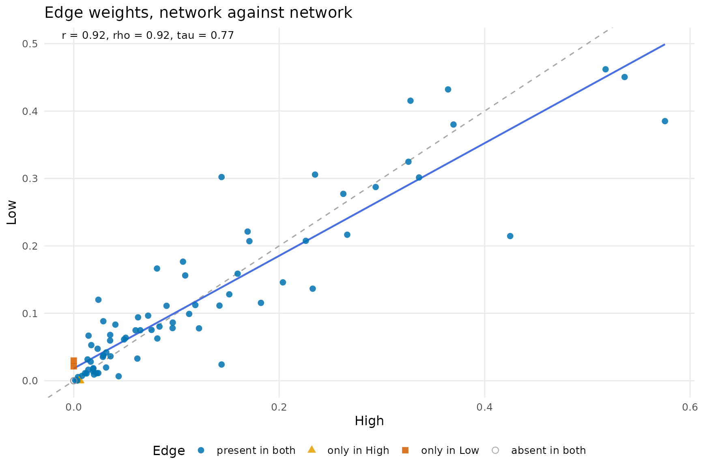
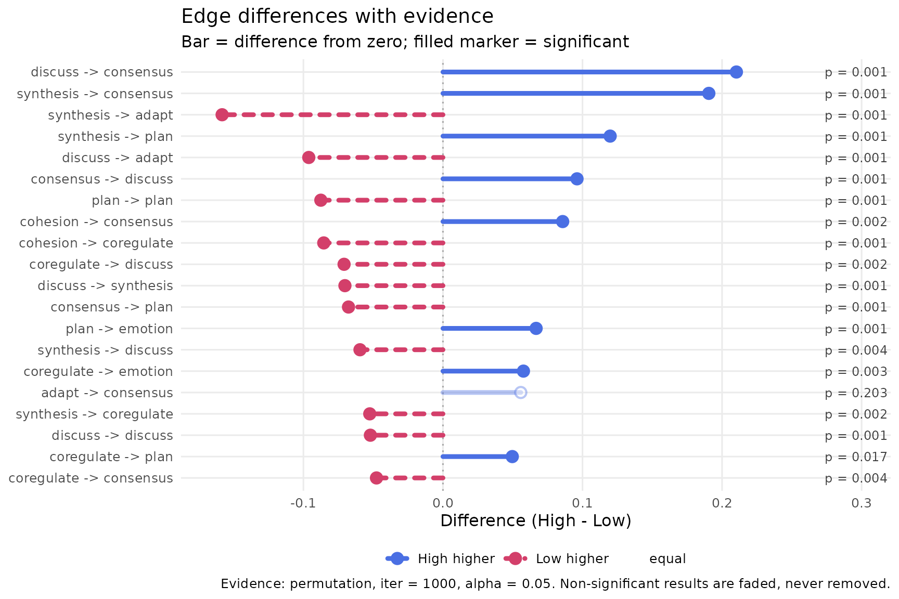

Comparing two networks with compare_networks()
Source:vignettes/articles/compare-networks.Rmd
compare-networks.RmdHigh and low achievers in group_regulation_long are
compared with a permutation test (1,000 permutations).
achievers <- build_network(group_regulation_long, method = "relative",
actor = "Actor", action = "Action",
time = "Time", group = "Achiever")
cmp <- compare_networks(achievers, test = "permutation", iter = 1000, seed = 1)
cmp## Network comparison (permutation, iter = 1000, alpha = 0.05, adjust = none): 2 networks, 1 pairs, scaling = none
## networks: High (9 nodes, directed), Low (9 nodes, directed)
##
## pair pearson mean|diff| max|diff| largest change
## High vs Low 0.92 0.03 0.21 discuss -> consensus (High higher)
## sig edges
## 42
##
## Tables: summary(x), edge_differences(x), node_differences(x), global_differences(x), network_metrics(x). Plot: plot(x, type = ...)
summary(cmp)## pair network_a network_b n_cells n_differing share_higher_a
## High vs Low High Low 81 78 0.51
## share_higher_b mean_abs_diff max_abs_diff pearson spearman cosine jaccard
## 0.46 0.03 0.21 0.92 0.92 0.95 0.75
## top_edge top_edge_higher n_sig_edges n_sig_nodes m_stat m_p
## discuss -> consensus High 42 16 2.61 0.001
## s_stat s_p
## 0.21 0.001The networks are similar overall (Pearson 0.92, cosine 0.95, Jaccard 0.75) but differ in 42 of 78 transitions and 16 of 27 node measures. The global test is significant (M = 2.61, p = 0.001).
difference
plot(cmp, type = "difference")
High minus Low for each transition: blue is higher in High, red higher in Low; the line style also carries the sign.
edges
plot(cmp, type = "edges")
The largest differences: discuss to
consensus (0.42 vs 0.21) and synthesis to
consensus (0.58 vs 0.39) are higher in High;
synthesis to adapt is higher in Low (0.14 vs
0.30). All have p = 0.001.
nodes
plot(cmp, type = "nodes")
Centrality differences per state. synthesis has higher
betweenness in High (7 vs 0, p = 0.003); adapt in Low (4 vs
1, p = 0.001).
global
plot(cmp, type = "global")
The 22 similarity and distance metrics of
global_differences(cmp), grouped by category.
heatmap
plot(cmp, type = "heatmap")
Every cell of the High minus Low difference matrix, with its value.
scatter
plot(cmp, type = "scatter")
Each transition’s weight in High against Low; points on the diagonal are equal in both (Pearson 0.92).
inference
plot(cmp, type = "inference")
Edge differences with their permutation p-values; filled markers are significant at 0.05.
Accounting for nesting
nested <- compare_networks(achievers, test = "permutation", iter = 1000,
seed = 1, actor = "Group")
nested## Network comparison (permutation, iter = 1000, alpha = 0.05, adjust = none, actor = Group): 2 networks, 1 pairs, scaling = none
## networks: High (9 nodes, directed), Low (9 nodes, directed)
##
## pair pearson mean|diff| max|diff| largest change
## High vs Low 0.92 0.03 0.21 discuss -> consensus (High higher)
## sig edges
## 42
##
## Tables: summary(x), edge_differences(x), node_differences(x), global_differences(x), network_metrics(x). Plot: plot(x, type = ...)
tail(global_differences(nested, digits = 3), 5)## pair network_a network_b category
## High vs Low High Low Global Test (permutation)
## High vs Low High Low Global Test (permutation)
## High vs Low High Low Nesting
## High vs Low High Low Nesting
## High vs Low High Low Nesting
## metric key value perm_p perm_sig
## M (global strength) perm_M 2.612 0.001 TRUE
## S (max edge) perm_S 0.210 0.001 TRUE
## ICC icc -0.002 NA NA
## Design effect (edges) deff_edges 1.009 NA NA
## Design effect (M) deff_global 1.169 NA NAStudents are nested in teams, and the achievement level is given per
team. With actor = "Group", the permutation test reassigns
whole teams instead of single students, and
global_differences() gains three Nesting rows.
The ICC is −0.002, which indicates little evidence of a nesting effect;
the design effect is 1.01 for the transitions and 1.17 for M. The
networks still differ overall (M = 2.61, p = 0.001), and 42 transitions
remain significant.